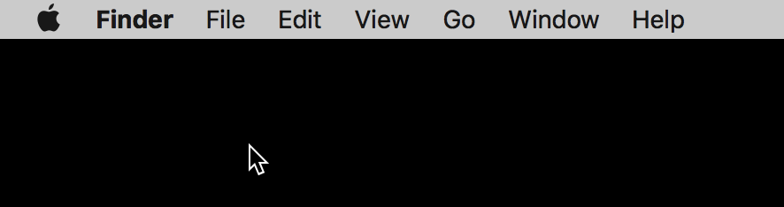
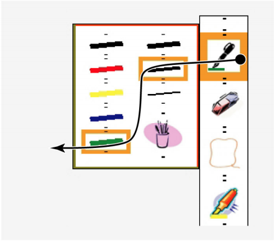

Thus far, we have focused on universal issues in user interface design and implementation. This chapter will be the first in which we discuss specific paradigms of interaction and the specific theory that underlies them.
Our fingers are pretty handy. (Sorry for the pun, I couldn't resist!). We use them to grasp things nearly everything. We use them to communicate through signs and gesture. And at a surprisingly frequent rate each day, we use them to point, in order to indicate, as precisely as we can, the identity of something (that person, that table, this picture, those flowers). As a nearly universal form of non-verbal communication, it's not surprising then that pointing has been such a powerful paradigm of interaction with user interfaces (that icon, that button, this text, etc.).
Pointing is not strictly related to interface design. In fact, back in the early 1950's, Paul M. Fitt's was very interested in modeling human performance of pointing. He began developing predictive models about pointing in order to help design dashboards, cockpits, and other industrial designs for manufacturing. His focus was on "aimed" movements, in which a person has a target they want to indicate and must move their pointing device (originally, their hand) to indicate that target. This is an example of a "closed loop" motion, in which a system can react to the evolving state of a system. The system in this case is a human, perceiving their motion toward a target, and their reaction is the continuous correction of their trajectory as they move toward a target. Fitts began measuring this closed loop movement toward targets, searching for a pattern that fit the data, and eventually found this law, which we call Fitt's Law:
Let's deconstruct this equation. The formula computes the time to reach a target (MT refers to "motion time"). The A in the figure is how far one must move to reach the target (e.g. how far your finger has to move from where it is to reach a target on your phone's touch screen. The W is the size (or width) of the target (e.g., the physical length of an icon on your smartphone's user interface). The units on these two measures don't really matter as long as they're the same, because the formula above computes the ratio between the two, canceling the units out. The a and b coefficients are user- and device-specific constants, where a is some fixed constant minimum time to move and b is like throughput measure of how efficiently movement occurs. Each of these coefficients differ by user and device.
So what does the formula mean? Let's play with the algebra. When A (distance to target) goes up, time to reach the target increases. That makes sense, right? If you're using a touch screen and your finger is far from the target, it will take longer to reach the target. What about W (size of target)? When that goes up, the movement time goes down. That also makes sense, because easier targets (e.g., bigger icons) are easier to reach. The implications of this are quite simple: the closer and bigger the target, the faster it will be to point to.
But there are some other interesting implications for user interface design in the algebraic extremes. For example, what if the target size is infinite? An example of this is the command menu in Apple OS X applications, which is always placed at the very top of a screen. The target in this case is the top of the screen, which is effectively infinite in size, because no matter how far past the top of the screen you point with a mouse, the operating system always constrains the mouse position to be within the screen boundaries. This makes the top of the screen (and really any side of the screen) a target of infinite size. And according to Fitt's Law, infinite target size means effectively zero movement time. That's why it's so quick to reach the command menu on OS X: you can't miss, at least on the vertical axis.

What's suprising about Fitts' Law is that, as far as we know, it applies to any kind of pointing: using a mouse, using a touch screen, using a trackball, using a trackpad, or reaching for an object in the physical world. That's conceptually powerful because it means that you can use the idea of large targets and short distance to design interfaces that are efficient to use. As an mathematical model used for prediction, it's less powerful: to really predict exactly how long a motion will take, you'd need to estimate a distribution of those a and b coefficients for a large group of possible users and devices. Researchers carefully studying motion might use it to do precise modeling, but for designers, the concepts it uses are more important.
Now that we have Fitts' law as a conceptual foundation for design, let's consider some concrete design ideas for pointing in interfaces. There are so many kinds: mice, styluses, touch screens, touch pads, joysticks, trackballs, and many other devices. Some of these devices are direct pointing devices (e.g., touch screens), in which input and output occur in the same physical place (e.g., a screen or some other surface). In contrast, indirect pointing devices (e.g., a mouse, a touch pad, a trackball) provide input in a different physical place from where output occurs (e.g., input on a device, output on a non-interactive screen). Each has their limitations: direct pointing results in occlusion, where a person's hand obscures output, and indirect pointing requires a person to attend to two different places.
There's also a difference between absolute and relative pointing. Absolute pointing includes input devices where the physical place one provides input is mapped directly onto action in the user interface. This is how touch screens work: interfaces where the input and output occur in the same physical dimensions. In contrast, relative pointing reads changes in a person's pointing. For example, moving a mouse left an inch is translated to moving a virtual cursor some number of pixels left.
When you think about these two dimensions from a Fitts' law perspective, making input more efficient is partly about inventing input devices that minimize the a and b coefficients. For example, researchers have invented new kinds of mice that have multi-touch on them, allowing users to more easily provide input during pointing movements (Villar et al. 2009). Other research has explored taking normal pointing devices and preserving the physical measurements of input rather than mapping them to integer number spaces, enabling sub-pixel precision in mouse movement for tasks like minute-level precision in calendar event creation, pixel-level image cropping, and precise video frame selection (Roussel et al. 2012). Others have invented new types of pointing devices altogether, such as the LightRing (see in the video below), which involves sensing of infrared proximity between a finger and a surface to point (Kienzle and Hinckley 2014). Some devices have been invented for 3D pointing using magnetic field sensing (Chen et al. 2013). Other techniques have tried to detect individual fingers on touchscreens, enabling multiple independent streams of pointing input (Gupta et al. 2016). All of these device manipulations seek to decrease pointing time by increasing throughput and reducing the time to start a motion.
Other innovations focus on software, and aim to increase target size or reduce travel distance. Many of these ideas are target-agnostic approaches that have no awareness about what a user might be pointing to. Some target-agnostic techniques include things like mouse pointer acceleration, which is a feature that makes the pointer move faster if it determines the user is trying to travel a large distance (Casiez 2008). Another example is the Angle Mouse, which analyzes the angles of movement trajectory, reducing gain when a user is trying to "turn," effectively making the target larger by slowing down the mouse, making it easier to reach (Wobbrock et al. 2009). These ideas are powerful because the operating system does not need any awareness of the targets on the screen, making it easier to implement user interfaces.
Other pointing innovations are target-aware, in that the technique needs to know the location of things that a user might be pointing to so that it can adapt based on target locations. For example, area cursors are the idea of having a mouse cursor represent an entire two-dimensional space rather than a single point, reducing the distance to targets. These have been applied to help users with motor impairments (Findlater et al. 2010). The Bubble Cursor is an area cursor that dynamically resizing a cursor's activation area based on proximity to a target, growing it to the maximum possible size based on the surrounding targets (Grossman and Balakrishnan 2005). You can see one improvement to the Bubble Cursor, the Bubble Lens, in the video below, showing how the Lens magnifies content in target-dense spaces (Mott and Wobbrock 2014).
Snapping is another target-aware technique similar idea commonly found in graphic design tools, in which a mouse cursor is constrained to a location based on nearby targets, reducing target distance. Researchers have made snapping work across multi-dimensions simultaneously (Felice et al. 2016) and have even applied it to things like scrolling, snapping to interesting content areas (Kim et al. 2014). Another clever idea is the notion of crossing, which, instead of pointing and clicking, involves moving across a "goal line" (Apitz and Guimbretière 2004). Shown in the image below, crossing can allow for fluid movements through commands and controls without ever clicking.

While target-aware techniques can be even more efficient that target-agnostic ones, making an operating system aware of targets can be hard, because user interfaces can be architected to process pointing input in such a variety of ways. Some research has focused on overcoming this challenge. For example, one approach reverse-engineered the widgets on a screen by analyzing the rendered pixels to identify targets, then applied targeted-aware pointing techniques like the bubble cursor (Dixon et al. 2012. Another technique used a data-driven technique, monitoring where in a window users typically point, and then assuming targets are there, applying target-aware pointing techniques (Hurst et al. 2007). Some have gone as far as using brain-sensing techniques to detect when a person is perceiving being near a target, and then having the system dynamically slow down pointer movement to increase the size of the target (Afergan et al. 2014).
You might be wondering: all this work for faster pointing? Fitts' law and it's focus on speed is a very narrow way to think about the experience of pointing to computers. And yet, it is such a fundamental and frequent part of how we interact with computers, making pointing fast and smooth is key to allowing a person to focus on their task and not on the low-level act of pointing. This is particularly true of people with motor impairments, which interfere with their ability to precisely point: every incremental improvement in one's ability to precisely point to a target might amount to hundreds or thousands of easier interactions a day, especially for people who depend on computers to communicate and connect with the world.
Daniel Afergan, Tomoki Shibata, Samuel W. Hincks, Evan M. Peck, Beste F. Yuksel, Remco Chang, and Robert J.K. Jacob. 2014. Brain-based target expansion. In Proceedings of the 27th annual ACM symposium on User interface software and technology (UIST '14). ACM, New York, NY, USA, 583-593.
Georg Apitz and François Guimbretière. 2004. CrossY: a crossing-based drawing application. In Proceedings of the 17th annual ACM symposium on User interface software and technology (UIST '04). ACM, New York, NY, USA, 3-12.
Casiez, G., Vogel, D., Balakrishnan, R., & Cockburn, A. (2008). The impact of control-display gain on user performance in pointing tasks. Human–Computer Interaction, 23(3), 215-250.
Ke-Yu Chen, Kent Lyons, Sean White, and Shwetak Patel. 2013. uTrack: 3D input using two magnetic sensors. In Proceedings of the 26th annual ACM symposium on User interface software and technology (UIST '13). ACM, New York, NY, USA, 237-244.
Marianela Ciolfi Felice, Nolwenn Maudet, Wendy E. Mackay, and Michel Beaudouin-Lafon. 2016. Beyond Snapping: Persistent, Tweakable Alignment and Distribution with StickyLines. In Proceedings of the 29th Annual Symposium on User Interface Software and Technology (UIST '16). ACM, New York, NY, USA, 133-144.
Morgan Dixon, James Fogarty, and Jacob Wobbrock. 2012. A general-purpose target-aware pointing enhancement using pixel-level analysis of graphical interfaces. In Proceedings of the SIGCHI Conference on Human Factors in Computing Systems (CHI '12). ACM, New York, NY, USA, 3167-3176.
Leah Findlater, Alex Jansen, Kristen Shinohara, Morgan Dixon, Peter Kamb, Joshua Rakita, and Jacob O. Wobbrock. 2010. Enhanced area cursors: reducing fine pointing demands for people with motor impairments. In Proceedings of the 23nd annual ACM symposium on User interface software and technology (UIST '10). ACM, New York, NY, USA, 153-162.
Tovi Grossman and Ravin Balakrishnan. 2005. The bubble cursor: enhancing target acquisition by dynamic resizing of the cursor's activation area. In Proceedings of the SIGCHI Conference on Human Factors in Computing Systems (CHI '05). ACM, New York, NY, USA, 281-290.
Aakar Gupta, Muhammed Anwar, and Ravin Balakrishnan. 2016. Porous Interfaces for Small Screen Multitasking using Finger Identification. In Proceedings of the 29th Annual Symposium on User Interface Software and Technology (UIST '16). ACM, New York, NY, USA, 145-156.
Amy Hurst, Jennifer Mankoff, Anind K. Dey, and Scott E. Hudson. 2007. Dirty desktops: using a patina of magnetic mouse dust to make common interactor targets easier to select. In Proceedings of the 20th annual ACM symposium on User interface software and technology (UIST '07). ACM, New York, NY, USA, 183-186.
Wolf Kienzle and Ken Hinckley. 2014. LightRing: always-available 2D input on any surface. In Proceedings of the 27th annual ACM symposium on User interface software and technology (UIST '14). ACM, New York, NY, USA, 157-160.
Juho Kim, Amy X. Zhang, Jihee Kim, Robert C. Miller, and Krzysztof Z. Gajos. 2014. Content-aware kinetic scrolling for supporting web page navigation. In Proceedings of the 27th annual ACM symposium on User interface software and technology (UIST '14). ACM, New York, NY, USA, 123-127.
Martez E. Mott and Jacob O. Wobbrock. 2014. Beating the bubble: using kinematic triggering in the bubble lens for acquiring small, dense targets. In Proceedings of the SIGCHI Conference on Human Factors in Computing Systems (CHI '14). ACM, New York, NY, USA, 733-742.
Nicolas Roussel, Géry Casiez, Jonathan Aceituno, and Daniel Vogel. 2012. Giving a hand to the eyes: leveraging input accuracy for subpixel interaction. In Proceedings of the 25th annual ACM symposium on User interface software and technology (UIST '12). ACM, New York, NY, USA, 351-358.
Nicolas Villar, Shahram Izadi, Dan Rosenfeld, Hrvoje Benko, John Helmes, Jonathan Westhues, Steve Hodges, Eyal Ofek, Alex Butler, Xiang Cao, and Billy Chen. 2009. Mouse 2.0: multi-touch meets the mouse. In Proceedings of the 22nd annual ACM symposium on User interface software and technology (UIST '09). ACM, New York, NY, USA, 33-42.
Jacob O. Wobbrock, James Fogarty, Shih-Yen (Sean) Liu, Shunichi Kimuro, and Susumu Harada. 2009. The angle mouse: target-agnostic dynamic gain adjustment based on angular deviation. In Proceedings of the SIGCHI Conference on Human Factors in Computing Systems (CHI '09). ACM, New York, NY, USA, 1401-1410.